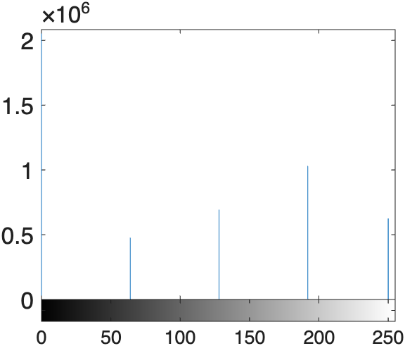
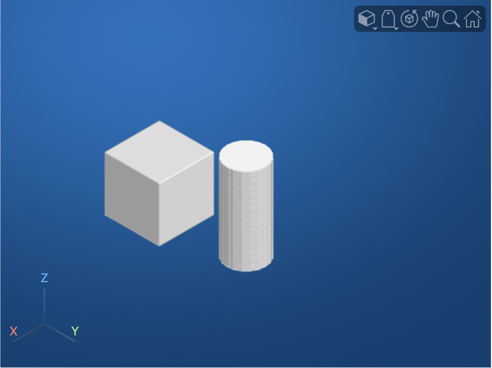

Volume Segmentation
Volume segmentation is just like Image Segmentation, but in 3D: instead of just segmenting neighboring pixels, you also segment voxels from adjacent image slices.
Segmentation allows you to isolate specific anatomical structures or features within medical images, such as organs, tumors, or blood vessels, by identifying and labeling voxels that belong to each region of interest. Once a structure is segmented, you can measure its volume, create 3D surface models for visualization, or use it as a mask for further analysis.
Example: Bubbles
The preprocessing and thresholding steps for 3D volumes are very similar to the steps we used for 2D segmentation. Consider the following volume:
| Load Bubbles volume | |
|---|---|

We can segment the bubbles in the volume using the following steps:
| Segment Bubbles | |
|---|---|

We can then apply the same morphological operations to clean up the mask…
| Clean up mask | |
|---|---|

…and to separate touching bubbles.
The
mmGetWatershedfunction applies the watershed transform to the inputted Mask. The second input of[3 1]means the transformation is run twice, first with a Regional Minima pixel size of 3, followed by a pixel size of 1. Often watershed transforms work best with sequential calls.

Render of the mask before and after the Watershed Transform. For these renders, we first convert the masks into label maps where each individual bubble has its own numeric label. In the label map before the watershed transform, there are 62 individual bubbles, including several fused bubbles. Fused bubbles here have the same color (see arrow and asterisk). In the label map after the transform, there are 71 bubbles and only one fused bubble remaining. Here the arrow points to an increased number of colors which indicates an increased number of separated bubbles. Whereas, the asterisk indicates a fused bubble which has the same color throughout. Note, this is the same fused bubble from the "Before" render, but its color has changed because its numeric label, which changed because there are an increase in the number unfused bubbles, shifting the labeling scheme for each bubble in the new label map.
Code to create the above Watershed Comparison Plot
To verify we separated touching bubbles using the watershed transform, we transform the masks to label maps, where each bubble in the has a unique numeric label. In this label map, bubbles adjacent to each other tend to have adjacent numeric labels. Using volshow, we render the masks with the ColorMap set to colorcube — a randomized color map that assigns a different color to adjacent lookup values. This allows us to color nearby bubbles separate colors.
Region Properties
Finally, we can calculate the properties of the segmented bubbles using the function regionprops3
| Calculate properties | |
|---|---|
rp =
71×3 table
Volume Centroid BoundingBox
______ __________________________ __________________________________________________
14002 82.997 234.98 16.988 68.5 220.5 2.5 29 29 29
14008 195 134 19.997 180.5 119.5 5.5 29 29 29
13684 114.04 170.69 21.995 99.5 156.5 7.5 29 29 29
: : :
14002 185.01 117.01 721 170.5 102.5 706.5 29 29 29
14015 151.01 95.005 727 136.5 80.5 712.5 29 29 29
13987 227.99 49.003 733 213.5 34.5 718.5 29 29 29
rphas 71 rows: one row for each bubble.
| Histogram | |
|---|---|

Histogram of bubble volumes
A histogram of the bubble volumes easily identifies the fused bubble, which has a volume nearly twice the average bubble volume.
We can exclude this volume from further analysis using a simple logical operation:
| Exclude Fused Bubble | |
|---|---|

Histogram of only non-fused bubble volumes
Label Maps
Often when segmenting, it is convenient to create label maps, instead of binary arrays. This is especially true when the segmentation occurs sequentially, or when it is important to maintain separate labels for a segment, such as for left and right kidneys.
Consider the following label map, 'shapes3D.mat'(1), which loads as the variable Vol.
- The volume, 'shapes3D.mat' is stored as a MATLAB .mat file and can be found in the Unit 3 data folder.
| Load Vol | |
|---|---|
| Volume Dimension and Class | |
|---|---|
As you can see the label map is a 318x318x159 uint8 volume.
| Volume Histogram | |
|---|---|
As shown in the histogram, the label map only contains 5 different intensity values (0 plus four more values).

We can determine the intensity values in Vol using the unique function
| Get Unique Intensities | |
|---|---|
A volume render reveals the label map has four embedded shapes of differing intensities.
| Volume Render | |
|---|---|

Volume Render of label map containing multiple 3D shapes. Here we use the volumeViewer app to render the volume using the "Cinematic Rendering" setting and the "hot" colormap. As you can see in the 3-D volume panel, there are four embedded shapes in the volume: a Cylinder, a Diamond, a Cube, and a Sphere. Each shape comprises a uniform set of intensity values, which is why each shape is rendered in a different hot pseudocolor in the 3D view and in differing shades of gray in the cross-sectional orthogonal views. You can review the intensity values by moving the mouse pointer over a shape in any of the orthogonal views (it doesn't work in the 3D view).
Segmenting out one shape
Our label map contains only 5 intensity values: a background intensity of 0 plus four different label values, which are segregated by shape.
| Shape | Intensity |
|---|---|
| Background | 0 |
| Sphere | 64 |
| Diamond | 128 |
| Cube | 192 |
| Cylinder | 250 |
If we want to process a single shape, we can easily index out the shape using a logical operation. For example, to index out the sphere, we just need the following logical operation:
Maskis a logical array where the sphere voxel values are all logical trues.

Or, if we want both the cube and the cylinder, we could use this logical operation
| Segment Cube and Cylinder | |
|---|---|

Here,
Maskis a logical array, both the cube and cylinder voxel values consist solely of logicaltrues.
Type-casting the volume to a logical array segments all the shapes to logical trues (since all intensity values greater than zero are contained within one of the four shapes).

Here, all shape intensity values are logical
trues.
Region Properties
We can calculate the region properties of the shapes using the regionprops3 function
| Get region properties of shapes | |
|---|---|
rp =
4×3 table
Volume Centroid BoundingBox
__________ __________________________ __________________________________________________
6.9387e+05 80.001 80.001 80 0.5 0.5 0.5 159 159 159
6.2602e+05 195.17 195.17 80 159.5 159.5 0.5 71 71 159
1.0303e+06 219 60 60 168.5 9.5 9.5 101 101 101
4.7792e+05 60 219 60 11.5 170.5 11.5 97 97 97
We get four rows in the region properties table, rp, because there are four shapes in Mask.
If we want a little clarity on which properties belong to which shapes, we can first convert the label map Vol to a categorical array and then calculate the properties:
volCat = categorical(Vol,[64 128 192 250],["Sphere" "Diamond" "Cube" "Cylinder"]);
rp = regionprops3(volCat,Vol,["Volume" "Centroid" "MaxIntensity"])
rp =
4×4 table
LabelName Volume Centroid MaxIntensity
__________ __________ __________________________ ____________
"Sphere" 4.7792e+05 60 219 60 64
"Diamond" 6.9387e+05 80.001 80.001 80 128
"Cube" 1.0303e+06 219 60 60 192
"Cylinder" 6.2602e+05 195.17 195.17 80 250
Now, the region properties table, rp, has a column LabelName which can be used to match the Shape to the property.